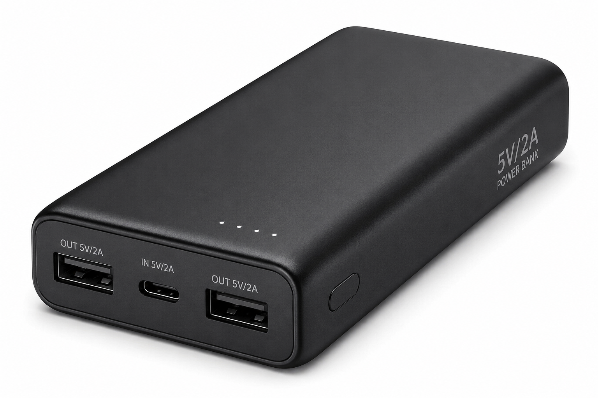
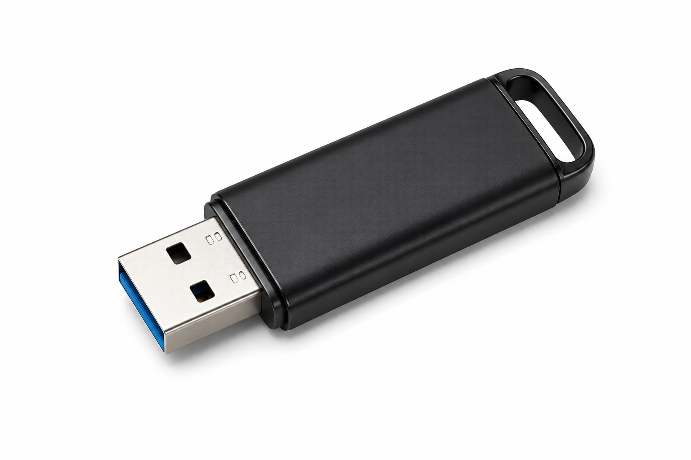
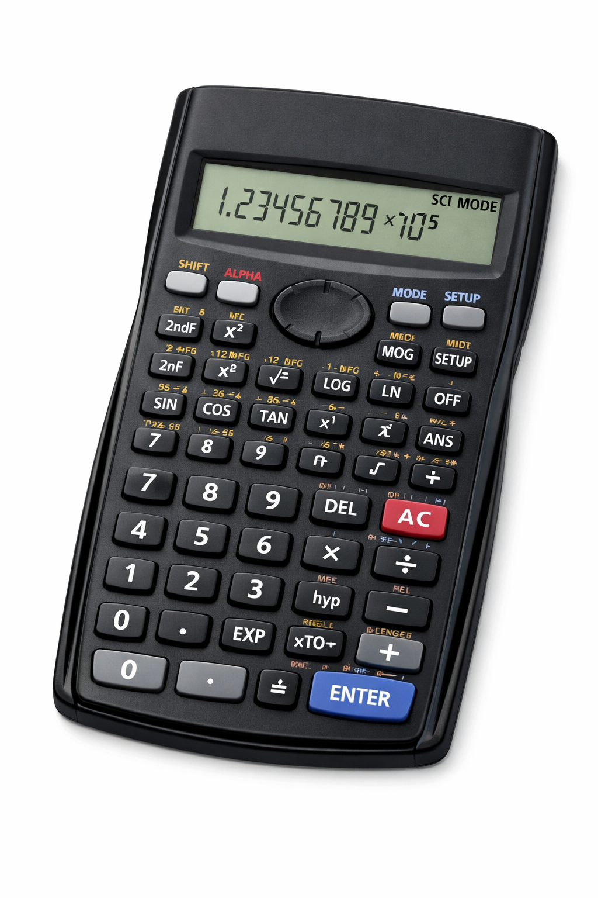
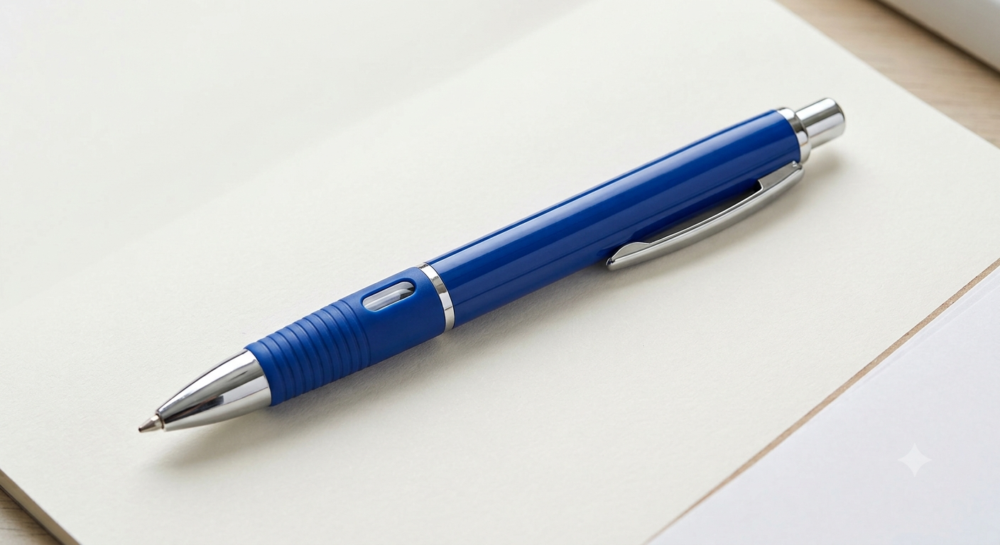
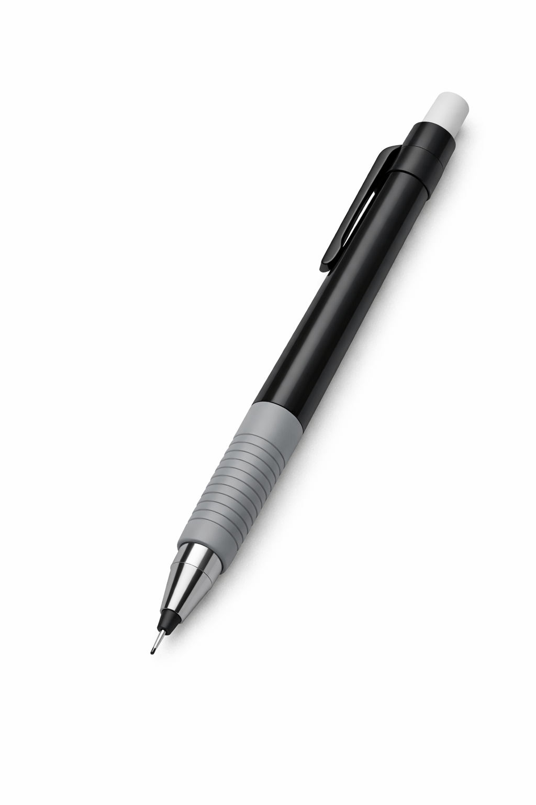
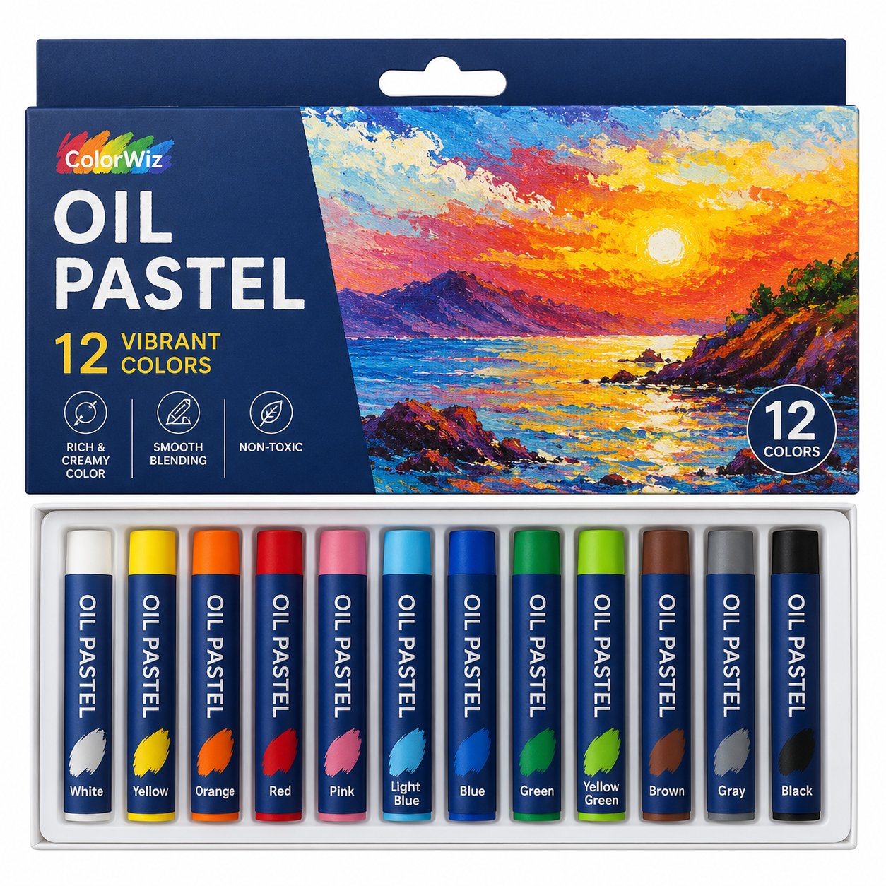
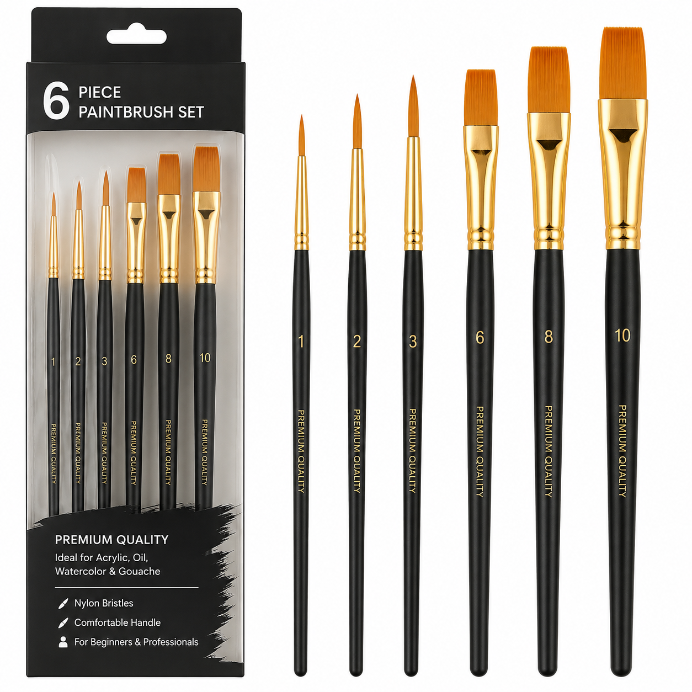
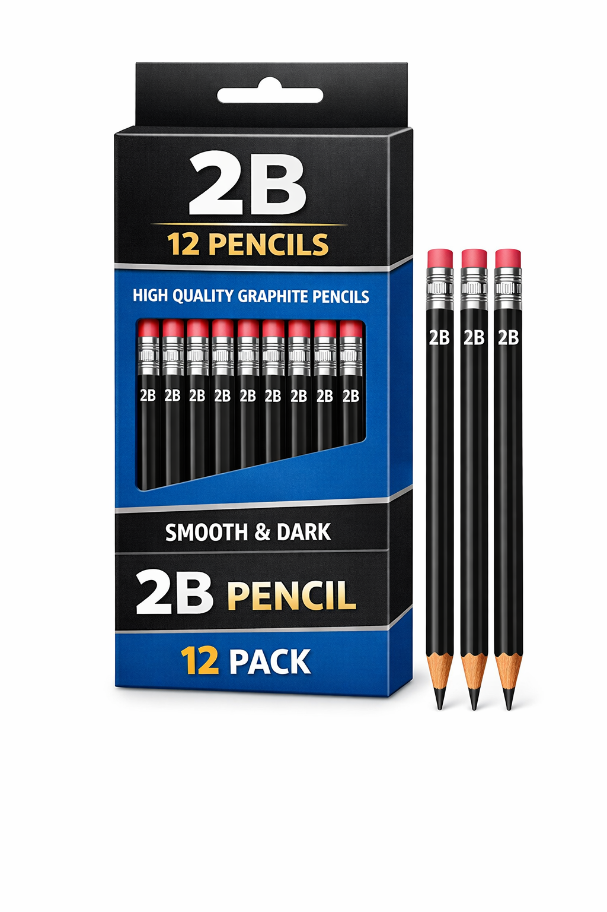

THE PENCIL B
THE PENCIL BGeneral Study Guide
Useful Resources Anywhere
| Charging Cable-Type C | Laptop Sleeves | Power Bank | USB Flash Drive |
|---|---|---|---|
 |
 |
 |
 |
| The lifeline of mobile devices. A tangle-free design that is highly compact and portable with intuitive design and fast charging | Shields your device from scratches and impacts, ensuring it stays in tip-top condition for everyday use and prolongs its lifespan | Highly recommended for remote working and long hours. Offering a convenient way to charge your devices on the go, ensuring high battery life wherever you are | Provides a quick and easy way to transfer and store data, making them essential for academic and work purposes in today's tech-driven world |
In today's technologized educational landscape, it is crucial that we maintain the longevity and usability of our electronics. The 4 products shown are massively relevant in helping sustain top-notch performance and efficiency in our devices
Interested? Visit the "Technological Accessories" section in our Products page to find out more!
Tips & Tricks For General Studies
- Pomodoro Technique
- An effective time management method which improves work efficiency as well. It involves breaking our study sessions into 25-minute intervals of deep focus, each interval being divided by 5-minute breaks. Study and break interval durations can be adjusted based on nature of the work and mental fatigue
- Feynman Technique
- A great technique for understanding complex problems. After revising, attempt to teach the content you've learned to another person, preferably someone who has no expertise over what you're teaching them. The goal is to simplify the complex structure of the content into a more intuitive form without sacrificing conceptual accuracy, and in such a way that the other person can understand
- Spaced Repetition
- The go-to method for unwavering memory. Review the concepts you've learned at gradually increasing time intervals. This forces your brain to retrieve information as you are about to forget it. Once every 2 days, once every 1 week, once every 2 weeks, etc..
Subject Study Guides
Mathematics
Recommended Supplies
| Calculators | Pens | Pencils |
|---|---|---|
 |
 |
 |
| Scientific and Graphing calculators are essential resources for solving math problems quickly and efficiently. It computes mathematical operations for us while we can focus on analyzing the logic of a question | The standard method of expressing our problem solving process on a piece of paper. Immensely beneficial for offloading cognitive load elsewhere to make space for more info in our brains | Great for sketching and drawing mathematical models such as diagrams, graphs, shapes |
To browse these resources, go over to our Products page!
Math Study Tips
- Practice, Practice, Practice
- Math is a subject that requires consistent practice to master. Regularly solving problems and exercises helps reinforce concepts and improve problem-solving skills
- Understand the Concepts
- Instead of memorizing formulas and procedures, focus on understanding the underlying concepts. This will help you apply your knowledge to different types of problems
- Seek Help When Needed
- If you're struggling with a particular topic or problem, don't hesitate to seek help from teachers, classmates, or online resources. Understanding difficult concepts early on can prevent confusion later
Arts & Design
Recommended Supplies
| Oil Pastels | Paint Brushes | Scissors | Pencils |
|---|---|---|---|
 |
 |
 |
 |
| Oil pastels are a versatile medium that can be used for drawing, blending, and creating vibrant colors. They are ideal for creating expressive and textured artwork | Paint brushes come in various shapes and sizes, allowing artists to create different strokes and effects. They are essential for painting and adding details to artwork | Scissors are a basic tool for cutting paper, fabric, and other materials. They are essential for creating collages, crafts, and other art projects | Pencils are a fundamental tool for sketching, drawing, and shading. They come in different grades of hardness, allowing artists to create a range of tones and textures |
To browse these resources, go over to our Products page!
Arts & Design Study Tips
- Experiment with Different Mediums
- Don't be afraid to try out different art mediums and techniques. Experimenting with various materials can help you discover your preferred style and improve your skills
- Study Art History
- Understanding the history of art and the works of famous artists can provide inspiration and insight into different artistic styles and movements
- Practice Regularly
- Consistent practice is key to improving your artistic skills. Set aside time each day or week to work on your art projects and refine your techniques
Linguistics & Writing
Recommended Supplies
| Pens | Pencils |
|---|---|
| Pens are essential for writing and note-taking. They come in various ink types and tip sizes, allowing for different writing experiences | Pencils are a fundamental tool for sketching, drawing, and shading. They come in different grades of hardness, allowing artists to create a range of tones and textures |
To browse these resources, go over to our Products page!
Linguistics & Writing Study Tips
- Read Widely
- Reading a variety of texts can help improve your vocabulary, comprehension, and writing skills. Explore different genres and styles to broaden your understanding of language
- Practice Writing Regularly
- Consistent writing practice is essential for developing your writing skills. Set aside time each day or week to write essays, stories, or journal entries
- Seek Feedback
- Getting feedback on your writing can help you identify areas for improvement and refine your skills. Share your work with teachers, peers, or online communities for constructive criticism
Sciences
Recommended Supplies
| Calculators | Pens | Pencils |
|---|---|---|
| Scientific and Graphing calculators are essential resources for performing scientific calculations quickly and efficiently. It computes mathematical operations for us while we can focus on analyzing the logic of a question | The standard method of expressing our problem solving process on a piece of paper. Immensely beneficial for offloading cognitive load elsewhere to make space for more info in our brains | Great for sketching and drawing scientific models such as diagrams, graphs, shapes |
To browse these resources, go over to our Products page!
Science Study Tips
- Understand the Concepts
- Instead of memorizing facts and formulas, focus on understanding the underlying concepts. This will help you apply your knowledge to different types of problems and experiments
- Practice Problem-Solving
- Regularly solving scientific problems and exercises helps reinforce concepts and improve problem-solving skills. Practice applying your knowledge to real-world scenarios
- Conduct Experiments
- Hands-on experiments can help you understand scientific concepts better. Conducting experiments allows you to observe phenomena, test hypotheses, and draw conclusions based on evidence